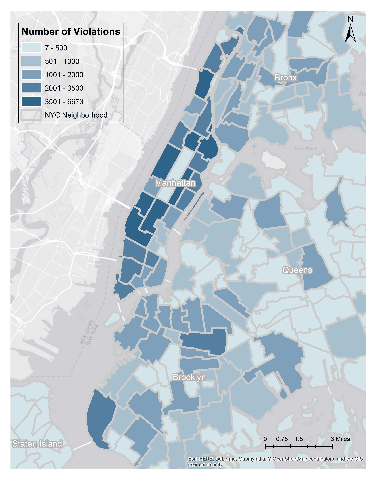

Double Parking Violations
Double Parking is defined by New York City Department of Finance (NYCDOF) as: “standing or parking a vehicle on the roadway side of a vehicle already stopped, standing or parked at the curb.” Double parking of passenger vehicles is illegal at all times in New York City, regardless of location, purpose or duration.
Rank No.7
Among all types of parking violations
502,082 Tickets
In Year 2014
5.0%
of the total parking violation tickets

